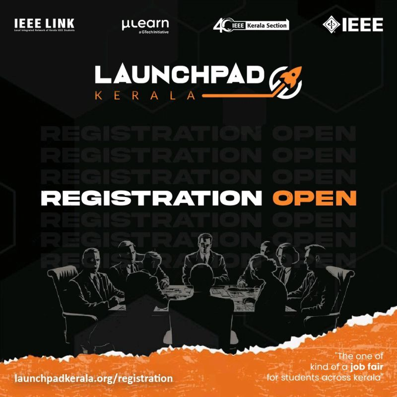

IEEE LaunchPad Kerala: A Brief Overview and Recent Updates
Introduction
Welcome to the IEEE LaunchPad Kerala Newsletter! 🎉 We're thrilled to have you join us as we embark on a journey of innovation, collaboration, and growth.
Launchpad Kerala 2024 is a premier job fair that brings together talented individuals and innovative companies in the technical and engineering fields. This collaboration between IEEE Kerala Section and GTech MuLearn aims to create meaningful connections that
drive progress and innovation in Kerala's job market. LaunchPad Kerala 2024 is your gateway to success in the tech and engineering sectors. This premier job fair, co-organized by the IEEE Kerala Section and GTech MuLearn, connects you with top companies and bright minds,
fostering an environment that fuels Kerala's innovation engine.
Call to Action
We invite you to join, participate, or contribute to IEEE LaunchPad Kerala. Whether you're a student, a professional, or an organization,
there are numerous ways to get involved and support this initiative. Together, we can make a difference in the lives of aspiring innovators
and entrepreneurs, and contribute to the growth of the tech ecosystem in Kerala.

Latest Updates
- Increased Participation: The event has seen a significant increase in participation over the years, with more students and young professionals joining the community.
- Expanded Network: IEEE LaunchPad Kerala has established partnerships with various organizations, institutions, and industry leaders, further expanding its reach and impact.
- Improved Curriculum: The event's curriculum has been updated to include the latest technologies and trends, ensuring that participants are equipped with the most relevant skills and knowledge.
Event Roadmap
Workshops and Training:
Participants will have the opportunity to attend workshops and training sessions led by industry experts,
covering a wide range of topics such as software development, artificial intelligence, machine learning, and more.Hackathon:
The event will feature a hackathon, where participants can form teams, brainstorm ideas, and develop innovative solutions to real-world problems.Mentorship:
Participants will receive guidance and mentorship from experienced professionals, who will provide valuable insights, feedback, and support throughout the event.Pitching and Demo:
Teams will have the opportunity to present their projects to a panel of judges, who will evaluate their
solutions based on various criteria such as innovation, impact, and technical execution.Awards and Recognition:
Winners will be awarded prizes, recognition, and opportunities to further develop their projects and ideas.